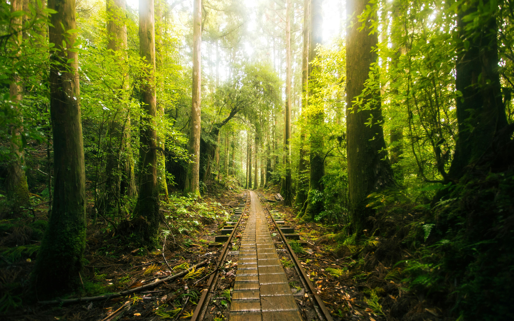

Buddha Statue
In Japanese temple gardens, Buddha statues often serve as serene focal points, symbolizing peace, enlightenment, and harmony with nature. Whether seated in meditation or reclining in repose, these statues are thoughtfully placed among moss-covered stones, koi ponds, and seasonal blooms to evoke a sense of spiritual calm.

Mount Fuji with Blooming Blue Flowers in Spring
Mount Fuji in spring is a breathtaking sight, especially when framed by blooming blue flowers like nemophila or lavender around Lake Kawaguchiko and Oishi Park. The contrast of the snow-capped peak against a sea of vibrant blossoms and clear skies creates a dreamy, postcard-perfect landscape.

- Yakushima
Yakushima, a lush subtropical island in southern Japan, is a UNESCO World Heritage Site famed for its ancient cedar forests, misty mountains, and rich biodiversity. Home to the legendary Jōmon Sugi tree—possibly over 7,000 years old—it offers mystical hiking trails, cascading waterfalls, and rare wildlife like Yaku monkeys and deer.

Aerial View of Tokyo Tower Amid Urban Skyline
Rising proudly amid Tokyo’s sprawling cityscape, Tokyo Tower offers a striking contrast of tradition and modernity, its red-and-white lattice glowing against a sea of sleek skyscrapers. From above, the urban skyline unfolds like a futuristic tapestry, with Mount Fuji often peeking through on clear days to complete the iconic panorama.